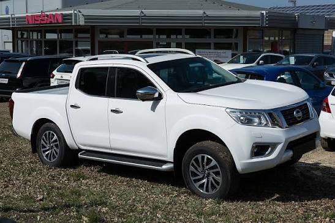
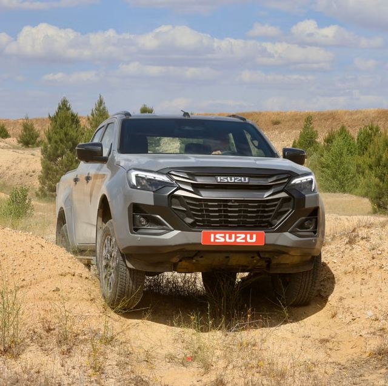
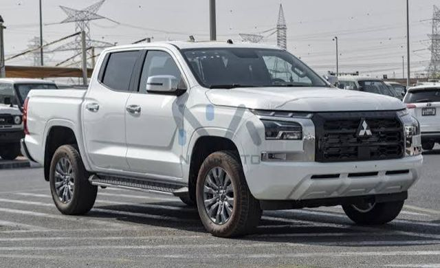

Herramienta de trabajo en el campo, la construcción y la carga ligera. Toca un modelo para ver más.
Resistente, con repuestos en todo el país.

Muy usada en trabajo y en familia.

Motor diésel apreciado en carga y campo.

Robusta para caminos difíciles.